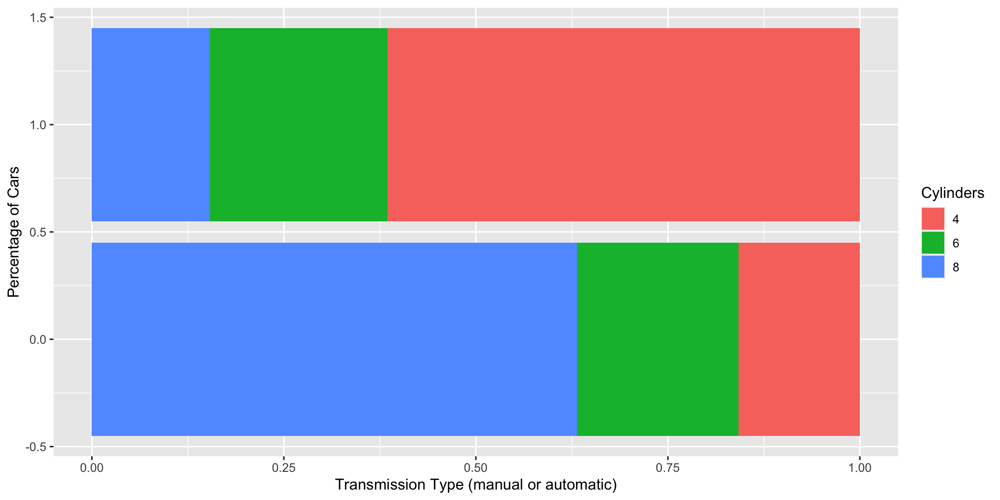
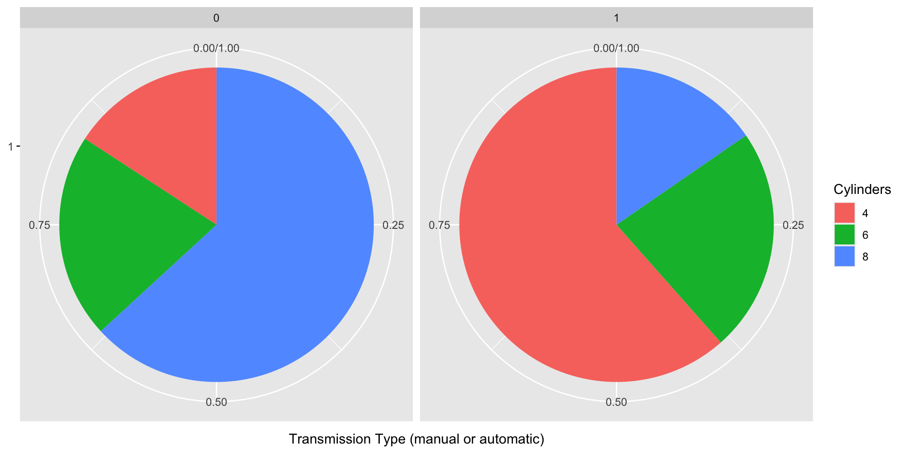

No Computers Data Viz
Names and Surveys
Data Viz no computers
Data Frame
Observations
Tidy Data
Variables
Variable Types
Take 1: Hand drawn graphs of survey questions.
Draw a graph of a variable. Do not write your name.
It does not need to be perfect.
Try to make it correct.
- It is fine if its not correct.
Talk to someone close to you.
Answer these questions:
Is the graph’s message or story clear?
What is missing from each graph?
What is distracting from the graph?
What does the graph do well?
What makes a clear graph?
Class discussion.
Graph Context.
Title
Well labeled Axes
Author’s Name
Data Source
Captions
Baumer’s Thoughts
Some of the following slides were borrowed by the text’s author.
A misleading chart from Apple

Pie charts

Are 6-cylinder engines more common among manuals or automatics?
Unclear Scales

- Often not very clearly defined
- Easy to lie by manipulating scales
- Why perspective?
- Width of lines?
Clearer Scales

- Good graphics have clear scales
- Remember iPhone sales graphic
Tufte
The follow slides are taken from Tufte.
Recommended: The Visual Display of Quantitative Information.


Balance of art vs. science
Data graphics:
purpose is to convey meaning
scientific, rigorous
peer-reviewed
clear
creative!
purpose might be to draw eyeballs
entertaining?
sales or marketing?
public sphere
creative
We’re only interested in the former